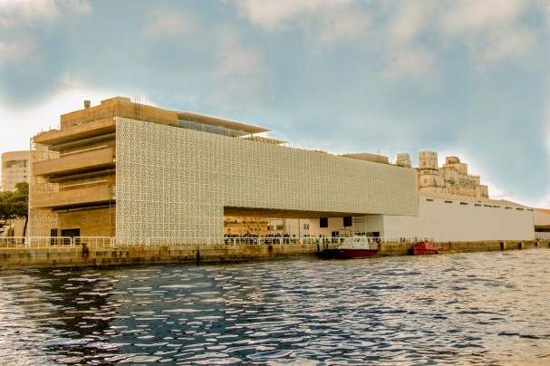

Cais do Sertão no Recife Antigo
A história do Marco Zero no Recife Antigo
O Cais do Sertão, instalado no antigo Armazém 10 do Porto do Recife, é um local de convivência, diversão e conhecimento, polo gerador de novas ideias e experiências. Abrigando e reverenciando a obra de Luiz Gonzaga, o grande homenageado do espaço, o Cais traz para a beira-mar da capital do Estado um pouco do solo rico e generoso da cultura popular do sertão.
O Cais utiliza os mais variados e inovadores recursos expositivos e tecnológicos para, em um diálogo entre a tradição e a invenção, proporcionar aos visitantes uma experiência de imersão no belo e sofrido universo sertanejo – origem e fonte de inspiração gonzaguiana – em toda a sua diversidade e complexidade.